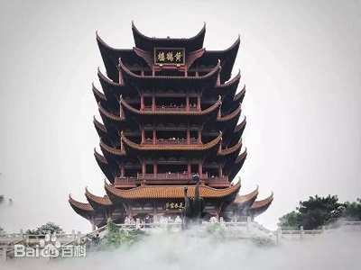
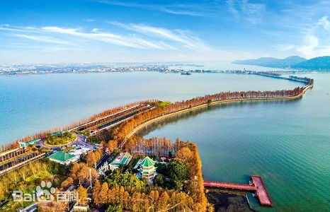
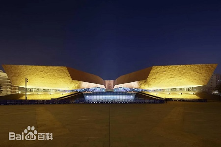

| 回到寝室主页 | ||||
| 首页 | 美食 | 景点 | 历史 | 疫情 |
|  | 黄鹤楼，位于湖北省武汉市武昌区，地处蛇山之巅，濒临万里长江，为武汉市地标建筑；始建于三国吴黄武二年（223年），历代屡加重修，现存建筑以清代“同治楼”为原型设计，重建于1985年；因唐代诗人崔颢登楼所题《黄鹤楼》一诗而名扬四海。自古有“天下绝景”之美誉，与晴川阁、古琴台并称为“武汉三大名胜”，与湖南岳阳岳阳楼、江西南昌滕王阁并称为“江南三大名楼”，是“武汉十大景”之首、“中国古代四大名楼”之一、“中国十大历史文化名楼”之一，世称"天下江山第一楼"。 黄鹤楼主楼为四边套八边形体、钢筋混凝土框架仿木结构，通高51.4米，底层边宽30米，顶层边宽18米，飞檐五层，攒尖楼顶，顶覆金色琉璃瓦，由72根圆柱支撑，楼上有60个翘角向外伸展；楼外有铸铜黄鹤造型、胜像宝塔、牌坊、轩廊、亭阁等建筑环绕，整楼形如黄鹤，展翅欲飞，檐下四面悬挂匾额，正面悬书法家舒同题“黄鹤楼”三字金匾。 |
|||
东湖自古就是游览胜地，历史上屈原、李白等不少名人曾在东湖留下足迹。东湖是最大的楚文化游览中心，楚风浓郁，楚韵精妙，行吟阁名播遐迩，离骚碑誉为“三绝”，楚天台气势磅礴，楚才园名人荟萃，楚市、屈原塑像、屈原纪念馆，内涵丰富。也是解放后毛泽东同志除中南海外居住时间最长的地方。 东湖也是武汉市区重要的文化中心，周边聚集了华中科技大学、中国地质大学（武汉）等26所高等院校，中科院武汉植物园等56个国家、省、部属科研院所，东湖新技术开发区国家光电子产业基地——中国光谷、湖北省博物馆，湖北美术馆，文化底蕴深厚。 |
 | |||
|  | 辛亥革命的发生，是近代以来中国社会矛盾激化和中国人民顽强斗争的必然结果。它在政治上、思想上给中国人民带来了不可低估的解放作用。开创了完全意义上的近代民族民主革命，推翻了统治中国几千年的君主专制制度，建立起共和政体，结束君主专制制度。传播了民主共和理念，极大推动了中华民族思想解放，以巨大的震撼力和影响力推动了中国社会变革。 辛亥革命博物馆，是武汉市为纪念辛亥革命·武昌首义100周年而兴建的一座专题博物馆，位于湖北省武汉市武昌区彭刘杨路258号，北临彭刘杨路，南抵张之洞路，东邻楚善街，西靠体育街，总建筑面积22142平方米，是首义文化区的核心建筑，与鄂军都督府（红楼）、孙中山铜像、拜将台铜像、烈士祠牌坊等同处一条轴线。辛亥革命博物馆于2009年8月动工兴建，2011年9月落成，2011年10月15日起免费对公众开放。 |
|||